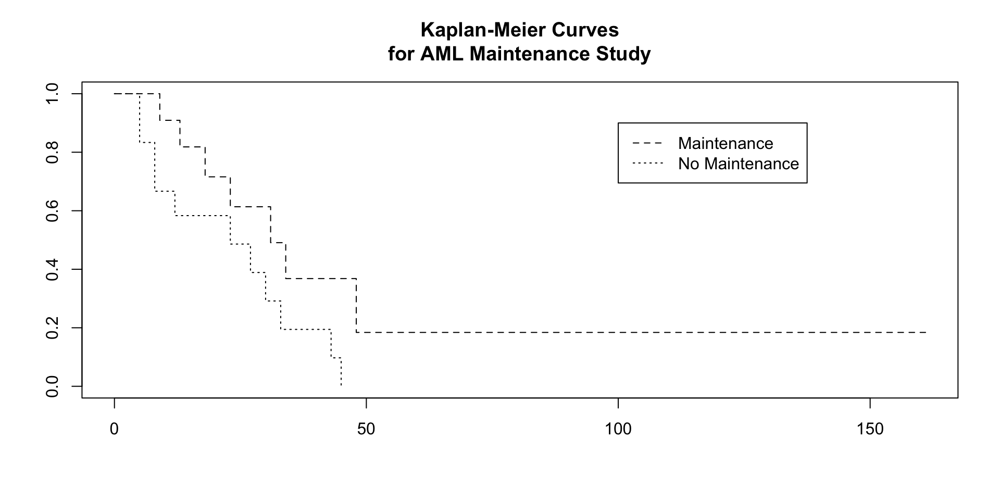
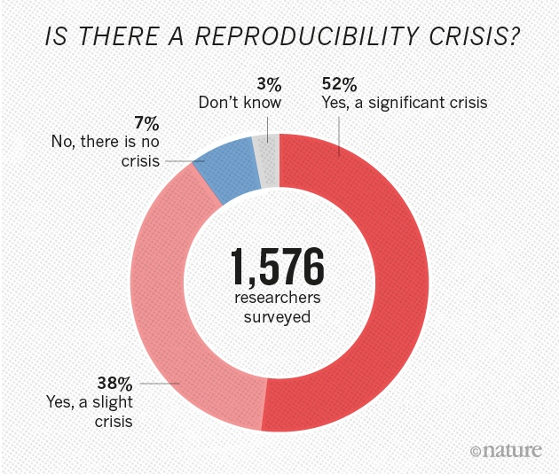
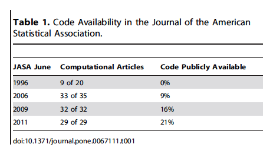

library(survival)
leukemia.surv <- survfit(Surv(time, status) ~ x, data = aml)
plot(leukemia.surv, lty = 2:3)
legend(100, .9, c("Maintenance", "No Maintenance"), lty = 2:3)
title("Kaplan-Meier Curves\nfor AML Maintenance Study")
Summer Students
7/30/24


Reproducibility: ability to recompute data analytic results given the data set and knowledge of the data analysis pipeline
Replicability: the chance that an independent experiment targeting the same scientific question will produce a consistent result
– Peng (2011) “Reproducible research in computational science” and Leek and Peng (2015) “Opinion: Reproducible research can still be wrong: Adopting a prevention approach”

Replicability has been a key part of scientific inquiry from perhaps the 1200s. It has even been called the “demarcation between science and non-science.”
– Gandrud (2013) book “Reproducible Research with R and R Studio” and references therein, including Roger Bacon’s “Opera quaedam hactenus inedita Vol. 1” from 1267
Victoria Stodden, a prominent scholar on this topic, has identified some useful distinctions in reproducible research:
Computational reproducibility: when detailed information is provided about code, software, hardware and implementation details.
Empirical reproducibility: when detailed information is provided about non-computational empirical scientific experiments and observations. In practice this is enabled by making data freely available, as well as details of how the data was collected.
Statistical reproducibility: when detailed information is provided about the choice of statistical tests, model parameters, threshold values, etc. This mostly relates to pre-registration of study design to prevent p-value hacking and other manipulations.
“Reproducibility is important because it is the only thing that an investigator can guarantee about a study.”
“a study can be reproducible and still be wrong”
“These days, with the complexity of data analysis and the subtlety of many claims (particularly about complex diseases), reproducibility is pretty much the only thing we can hope for. Time will tell whether we are ultimately right or wrong about any claims, but reproducibility is something we can know right now.”
“By using the word reproducible, I mean that the original data (and original computer code) can be analyzed (by an independent investigator) to obtain the same results of the original study. In essence, it is the notion that the data analysis can be successfully repeated. Reproducibility is particularly important in large computational studies where the data analysis can often play an outsized role in supporting the ultimate conclusions.”
– Roger Peng’s 2014 blog post on Simply Statistics “The Real Reason Reproducible Research is Important” also see Peng (2011) “Reproducible research in computational science”
An article about computational science in a scientific publication is not the scholarship itself, it is merely advertising of the scholarship. The actual scholarship is the complete software development environment and the complete set of instructions which generate the figures.
It takes some effort to organize your research to be reproducible.
We found that although the effort seems to be directed to helping other people stand up on your shoulders, the principal beneficiary is generally the author herself.
This is because time turns each one of us into another person, and by making effort to communicate with strangers, we help ourselves to communicate with our future selves.
(Jon F. Claerbout is the Cecil Green Professor Emeritus of Geophysics at Stanford University. He was one of the first scientists to emphasize that computational methods threaten the reproducibility of research unless open access is provided to both the data and the software underlying a publication.)

May 25, 2016 Editorial “Reality check on reproducibility”

One-third of survey respondents report that they have taken the initiative to improve reproducibility. The simple presence of another person ready to question whether a data point or a sample should really be excluded from analysis can help to cut down on cherry-picking, conscious or not. A couple of senior scientists have set up workflows that avoid having a single researcher in charge of preparing images or collecting results. Dozens of respondents reported steps to make better use of statistics, randomization or blinding. One described an institution-level initiative to teach scientists computer tools so they could share and analyse data collaboratively. Key to success was making sure that their data-management system also saved time.
Stodden, Guo, and Ma (2013) “Toward Reproducible Computational Research: An Empirical Analysis of Data and Code Policy Adoption by Journals”

Vasilevsky, Minnier, Haendel, and Champieux (2017) “Reproducible and reusable research: are journal data sharing policies meeting the mark?”
In Biomedical research, open access can be difficult/unethical.
Wilkinson, Dumontier, Aalbersberg, Appleton, Axton, Baak, Blomberg, Boiten, da Silva Santos, Bourne, and et al. (2016)
“Enhancing Reproducibility through Rigor and Transparency”
NIH “Rigor and Reproducibility” Policy
Note: Most of this is in regards to the science, design of experiment, chemical and biological methods. Essentially no language describing reproducibility of analyses or data management for data or results generated by the grant.
Journals should aim to facilitate the interpretation and repetition of experiments as they have been conducted in the published study.
Of the 480 who responded, 49% thought that the checklist had improved the quality of research published in Nature (15% disagreed); 37% thought the checklist had improved quality in their field overall (20% disagreed).
Checklists can be useful for computational research in general.
An excellent example: ROpenSci’s Reproducibility Checklist
Stodden, McNutt, Bailey, Deelman, Gil, Hanson, Heroux, Ioannidis, and Taufer (2016) in Science Policy Forum
“The basics of RDM [Research Data Management] that should be applied to every research project include: i) storing data carefully and securely (according to the appropriate standards in the case of sensitive data), ii) backing up frequently and in at least two separate locations, and iii) using a file naming convention so that others within and outside a project can understand a file’s content.”
Hejblum et al “Realistic and Robust Reproducible Research for Biostatistics”
Resources: - DMPonline by the Digital Curation Centre for writing data management plans - FAQs for Enabling FAIR Data - LabKey, open-source specimen and data management platform
Problems:
Solutions for Workflow:
make); in python: snakemake, in R: drakeSolutions for Dependency:
Literate programming is an approach to programming introduced by Donald Knuth in which a program is given as an explanation of the program logic in a natural language, such as English, interspersed with snippets of macros and traditional source code, from which a compilable source code can be generated. (Knuth, 1984)
Current implementations weave code, documentation, results, and other output in the same document.
Examples: quarto (for R, python, other languages), knitr (for R), Sweave; Jupyter notebooks (for python) SASweave, Statrep (for SAS); StatWeave (for STATA)
Resources: - Software Carpentry “Version Control w/Git” - Github tutorials - Happy Git and GitHub for the useR - Jenny Bryan, Jim Hester
Have you ever:
- Made a change to code, realised it was a mistake and wanted to revert back?
- Lost code or had a backup that was too old?
- Had to maintain multiple versions of a product?
- Wanted to see the difference between two (or more) versions of your code?
- Wanted to prove that a particular change broke or fixed a piece of code?
- Wanted to review the history of some code?
- Wanted to submit a change to someone else’s code?
- Wanted to share your code, or let other people work on your code?
- Wanted to see how much work is being done, and where, when and by whom?
- Wanted to experiment with a new feature without interfering with working code?
In these cases, and no doubt others, a version control system should make your life easier.
Sandve, Nekrutenko, Taylor, and Hovig (2013)
make files to rerun analyses when certain files changeBuckheit, J. B. and D. L. Donoho (1995). Wavelab and reproducible research. Springer.
Claerbout, J. and M. Karrenbach (1992). “Electronic documents give reproducible research a new meaning”. In: Proc. 62nd Ann. Int. Meeting of the Soc. of Exploration Geophysics. , pp. 601-604.
De Leeuw, J. (2001). “Reproducible research. the bottom line”. In: Department of Statistics, UCLA.
Gandrud, C. (2013). Reproducible Research with R and R Studio. CRC Press.
Knuth, D. E. (1984). “Literate programming”. In: The Computer Journal 27.2, pp. 97-111.
Leek, J. T. and R. D. Peng (2015). “Opinion: Reproducible research can still be wrong: Adopting a prevention approach”. In: PNAS; Proceedings of the National Academy of Sciences 112.6, pp. 1645-1646.
Peng, R. D. (2011). “Reproducible research in computational science”. In: Science (New York, Ny) 334.6060, p. 1226.
Sandve, G. K., A. Nekrutenko, J. Taylor, et al. (2013). “Ten simple rules for reproducible computational research”.
Schwab, M., M. Karrenbach, and J. Claerbout (2000). “Making scientific computations reproducible”. In: Computing in Science & Engineering 2.6, pp. 61-67.
Stodden, V., P. Guo, and Z. Ma (2013). “Toward reproducible computational research: an empirical analysis of data and code policy adoption by journals”. In: PloS one 8.6, p. e67111.
Stodden, V., M. McNutt, D. H. Bailey, et al. (2016). “Enhancing reproducibility for computational methods”. In: Science 354.6317, pp. 1240-1241. ISSN: 1095-9203. DOI: 10.1126/science.aah6168. URL: http://dx.doi.org/10.1126/science.aah6168.
Vasilevsky, N. A., J. Minnier, M. A. Haendel, et al. (2017). “Reproducible and reusable research: are journal data sharing policies meeting the mark?” In: PeerJ 5, p. e3208. ISSN: 2167-8359. DOI: 10.7717/peerj.3208. URL: http://dx.doi.org/10.7717/peerj.3208.
Wilkinson, M. D., M. Dumontier, I. J. Aalbersberg, et al. (2016). “The FAIR Guiding Principles for scientific data management and stewardship”. In: Scientific Data 3.1. ISSN: 2052-4463. DOI: 10.1038/sdata.2016.18. URL: http://dx.doi.org/10.1038/sdata.2016.18.
Wilson, G., D. Aruliah, C. T. Brown, et al. (2014). “Best practices for scientific computing”. In: PLoS Biol 12.1, p. e1001745.
This is an R Markdown presentation. Markdown is a simple formatting syntax for authoring HTML, PDF, and MS Word documents. For more details on using R Markdown see http://rmarkdown.rstudio.com.
This is a document written in plain text (.qmd file) with text and R code embedded with the special syntax. Within RStudio when you click the render button a document will be generated that includes both content as well as the output of any embedded R code chunks within the document.